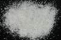

|
|
(For further information on spectroscopy, see:
http://speclab.cr.usgs.gov)
TITLE: Grossular HS113 Garnet DESCRIPT
DOCUMENTATION_FORMAT: MINERAL
SAMPLE_ID: HS113
MINERAL_TYPE: Nesosilicate
MINERAL: Grossular (Grossularite) (Garnet group)
FORMULA: Ca3Al2(SiO4)3
FORMULA_HTML: Ca3Al2(SiO4)3
COLLECTION_LOCALITY: Transvaal, S. Africa
ORIGINAL_DONOR: Hunt and Salisbury Collection
CURRENT_SAMPLE_LOCATION: USGS Denver Spectroscopy Laboratory
ULTIMATE_SAMPLE_LOCATION: USGS Denver Spectroscopy Laboratory
SAMPLE_DESCRIPTION:
Forms series with Andradite, with Hydrogrossular, with Uvarovite.
In this sample some ferrous ion has substituted for calcium,
producing the 1.0 µm absorption and some ferric ion has
substituted for aluminum, producing the band near 0.8 µm. Such
substitution is common for this mineral. The presence of Fe
accounts for the absorption features near 0.6 and 0.43 µm and the series
of bands between 1.4 and 1.51 µm are due to OH substitution for SiO4.
Carbonate impurities cause absorption features near 2.25, 2.35, and 2.5 µm.
Hunt, G.R., J.W. Salisbury, and C.J. Lenhoff, 1973, Visible and near-infrared spectra of minerals and rocks: VI. Additional silicates. Modern Geology, v. 4, p. 85-106.
See additional spectra of grossular garnets in library for comparison. This sample has been washed in HCl acid to remove carbonate contaminants.
IMAGE_OF_SAMPLE:

END_SAMPLE_DESCRIPTION.
XRD_ANALYSIS:
Grossular + feldspar + others (Norma Vergo, USGS)
END_XRD_ANALYSIS.
COMPOSITIONAL_ANALYSIS_TYPE: None # XRF, EM(WDS), ICP(Trace), WChem
COMPOSITION_TRACE: None
COMPOSITION_DISCUSSION:
END_COMPOSITION_DISCUSSION.
MICROSCOPIC_EXAMINATION:
average grain size = 300 µm
Sample contains a trace of magnetite which can be cleaned with a magnet or Franz separator. Large garnet grains 15% coated by 8 µm garnet grains. Some of the thinner grains are isotropic, but the thicker grains have mottled extinction suggesting intense internal fracturing. Grains have high relief, high refractive index, rough fracture and no cleavage. Apart from the mottled extinction this sample resembles garnet. Sample tested with HCl acid and gave no fizz. G. Swayze.
END_MICROSCOPIC_EXAMINATION.
SPECTROSCOPIC_DISCUSSION:
END_SPECTROSCOPIC_DISCUSSION.
SPECTRAL_PURITY: 1d2c3c4c # 1= 0.2-3, 2= 1.5-6, 3= 6-25, 4= 20-150 microns
| LIB_SPECTRA_HED: | where | Wave Range | Av_Rs_Pwr | Comment |
|---|---|---|---|---|
| LIB_SPECTRA: | splib04a r 1824 | 0.2-3.0µm | 200 | g.s.= 300 µm |
| LIB_SPECTRA: | splib05a r 2930 | 0.2-3.0µm | 200 | g.s.= |
| LIB_SPECTRA: | splib06a r 8517 | g.s.= | ||
| LIB_SPECTRA: | splib06a r 8529 | g.s.= |
{kind=link}